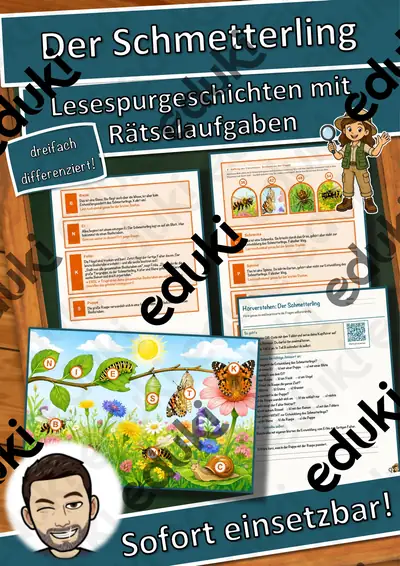
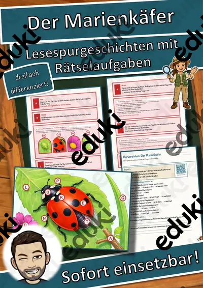
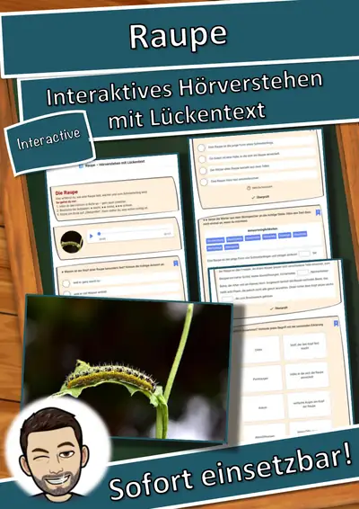
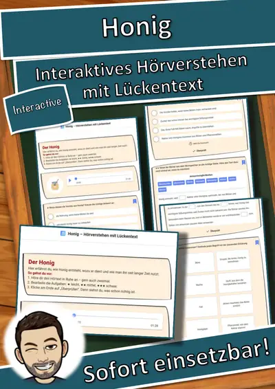
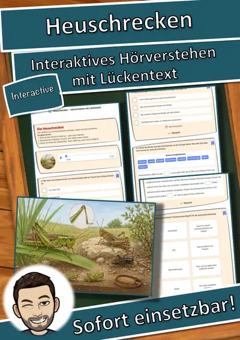
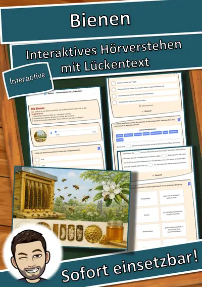

Insekten und Bienen: Arbeitsblätter für Klasse 1–6 (Sachunterricht)
Insekten sind artenreich und für Kinder gut greifbar. Der Lehrplan nutzt sie für Körperbau mit sechs Beinen, Entwicklung bis zum Schmetterling und die Bedeutung der Bienen für Bestäubung und Honig.
Zum Themenkern zählen Körperbau, Metamorphose und Bestäubung. Als Vertiefung bieten sich Bienenvolk und Ameisenstaat an, am Ende steht oft Spinnentiere im Vergleich.
Die Lehrpläne der Länder sehen das Thema im Fach Sachunterricht vor, in der Regel in den Klassen 1 bis 6. Als Ziel gilt: die Schülerinnen und Schüler unterscheiden Insekten von Spinnentieren und beschreiben die Entwicklung eines Schmetterlings.
Für den Einstieg in Insekten und Bienen bieten sich Aufgaben zu Körperbau an, zum Üben solche zu Metamorphose und Bestäubung, zur Wiederholung vor einer Lernkontrolle ein Blick auf Spinnentiere im Vergleich. Die Lösungen liegen bei, sodass im Unterricht niemand nachschlagen muss. Zur Differenzierung eignen sich die Lesespurgeschichten mit ihren drei Niveaustufen.
Zum Thema finden Sie 43 Materialien, unter anderem Ameisen, Wespen und Raupe, verteilt auf 5 Lesespurgeschichten, 1 Bastelvorlage und 24 Lückentexte mit Hörverstehen in Klasse 1–7. Mit Becherlupen lässt sich in der Schulhofwiese in zwanzig Minuten ein kleines Artenprotokoll anlegen.
Das gehört zum Thema
Passende Arbeitsblätter und Materialpakete

Spinnen-Rätsel-Faltkarte – Halloween-Rätsel lesen und schreiben, Pop-up-Spinne, 3-fach differenziert (Klasse 2/3)

Lesespur: Wenn die Spinnen fliegen – Lesespurgeschichte mit Rätseln (Klasse 3)

Lesespur: Die Biene – Lesespurgeschichte mit Rätseln (Klasse 5)

Lesespur: Die Spinne – Lesespurgeschichte mit Rätseln (Klasse 5)

Lesespur: Der Schmetterling – Lesespurgeschichte mit Rätseln (Klasse 4)

Lesespur: Der Marienkäfer – Lesespurgeschichte mit Rätseln (Klasse 4)

Ameisen – Hörverstehen mit Lückentext (interaktiv)

Wespen – Hörverstehen mit Lückentext (interaktiv)

Raupe – Hörverstehen mit Lückentext (interaktiv)

Marienkäfer – Hörverstehen mit Lückentext (interaktiv)

Honig – Hörverstehen mit Lückentext (interaktiv)

Heuschrecken – Hörverstehen mit Lückentext (interaktiv)

Grashüpfer – Hörverstehen mit Lückentext (interaktiv)

Bienen – Hörverstehen mit Lückentext (interaktiv)

Grashüpfer Lückentext mit Wortspeicher Hörverstehen und Suchsel

Spinnen Lückentext mit Wortspeicher Hörverstehen und Suchsel

Schmetterlinge Lückentext mit Wortspeicher Hörverstehen und Suchsel

Wespen Lückentext mit Wortspeicher Hörverstehen und Suchsel

Raupe Lückentext mit Wortspeicher Hörverstehen und Suchsel

Hummeln Lückentext mit Wortspeicher Hörverstehen und Suchsel

Honig Lückentext mit Wortspeicher Hörverstehen und Suchsel

Heuschrecken Lückentext mit Wortspeicher Hörverstehen und Suchsel

Fliegen Lückentext mit Wortspeicher Hörverstehen und Suchsel

Mücken Lückentext mit Wortspeicher Hörverstehen und Suchsel
Weitere 19 Materialien zum Thema im Material-Finder.
Häufige Fragen
Für welche Klassenstufe passen die Arbeitsblätter zu Insekten und Bienen?
Die 43 Materialien zu diesem Thema sind für Klasse 1–7 ausgelegt, die meisten davon für Klasse 6. Einzelne Titel lassen sich mit Anpassung auch eine Stufe darunter oder darüber einsetzen.
Welche Inhalte decken die Materialien zu Insekten und Bienen ab?
Inhaltlich reicht die Auswahl von Körperbau über Metamorphose und Bestäubung bis zu Ameisenstaat; Details stehen bei den einzelnen Materialien.
Wie setze ich Insekten und Bienen im Unterricht ein?
Beginnen Sie mit einem Einstieg zu Körperbau und ergänzen Sie nach Bedarf. Mit Becherlupen lässt sich in der Schulhofwiese in zwanzig Minuten ein kleines Artenprotokoll anlegen.
Mehr Material nach Fach und Klasse
- Alle Materialien Deutsch
- Arbeitsblätter Deutsch Klasse 1
- Arbeitsblätter Deutsch Klasse 2
- Arbeitsblätter Deutsch Klasse 3
- Arbeitsblätter Deutsch Klasse 4
- Arbeitsblätter Deutsch Klasse 5
- Arbeitsblätter Deutsch Klasse 6
- Unterrichtsmaterial Klasse 1
- Unterrichtsmaterial Klasse 2
- Unterrichtsmaterial Klasse 3
- Unterrichtsmaterial Klasse 4
- Unterrichtsmaterial Klasse 5
- Unterrichtsmaterial Klasse 6
Verwandte Lehrplanthemen
- Bauernhof und Nutztiere (Sachunterricht, Klasse 1–4)
- Berufe und Berufswahl (Sachunterricht, Klasse 1–10)
- Dinosaurier und Urzeit (Sachunterricht, Klasse 1–5)
- Geld und Konsum (Sachunterricht, Klasse 2–10)
- Gesunde Ernährung (Sachunterricht, Klasse 1–8)